6 Power Electronic Converters
DC – DC (chopper) \(\quad\)
DC – AC (inverter) \(\quad\)
AC – DC (rectifier)
AC – AC (inverter)
6.1 Power Semiconductor Devices
\(\boxed{\textbf{Silicon}} \quad 14\)
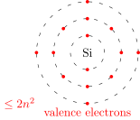
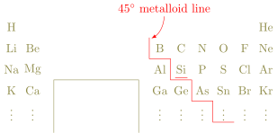
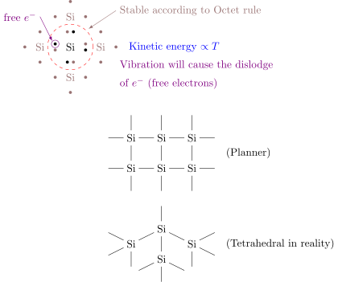
\(\boxed{\textbf{Diamond}} \quad \,\)(Wide-bandgap devices)
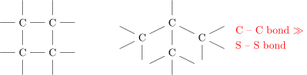
\(\boxed{\textbf{Graphite}}\)
\(\boxed{\textbf{Copper}}\) (Cu 29)
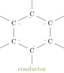
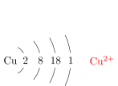
\(\boxed{\textbf{Doping}}\)
- dope with Group V elements. (P, As)
N-type semiconductor
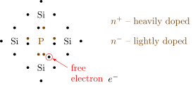
- dope with Group III elements (B, Al)
P-type semiconductor
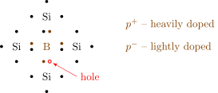
\(\boxed{\textbf{Diode}}\)
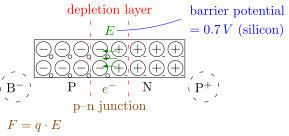
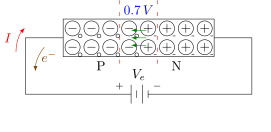
if \(V_e > 0.7\,V\),
\(e^-\) passes through the depletion layer. (Conduct)
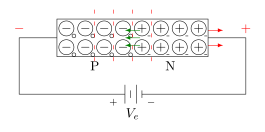
Depletion layer expands and there is no current. (Block)
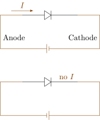
\(\boxed{\textbf{Bipolar Junction Transistor}}\) BJT
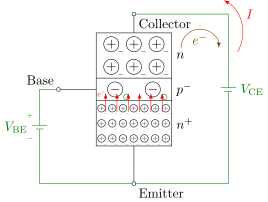
Base: thin and lightly doped.
Emitter: heavily doped.
Collector: intermediately doped.
- Apply \(V_{\mathrm{BE}} > 0.7\,V\), \(e^-\) flow into base
-
Very few \(e^-\) will stay in base, (lightly doped)
most \(e^-\) will flow to collector. (thin)
- With \(V_{\mathrm{CE}}>0\), \(e^-\) will flow out. (current)
\(\boxed{\textbf{Junction Field Effect Transistor}}\) JFET
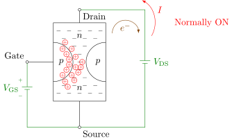
\[V_{\mathrm{GS}} = V_\mathrm{G} - V_\mathrm{S} < 0\]
- When \(V_{\mathrm{GS}} = 0\), JFET is ON.
- When \(V_{\mathrm{GS}} < 0\), depletion layer expands. \(I=0\). (OFF)
6.2 DC – DC Converter
\(\left(\begin{array}{l}V,I\, \to \text{constant} \\ v,i,\, \to \text{variable}\end{array}\right)\)
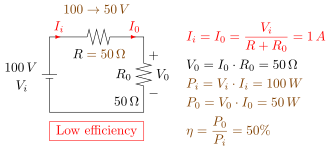
- Replace \(R\) with a switch (BJT, FET).
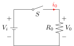
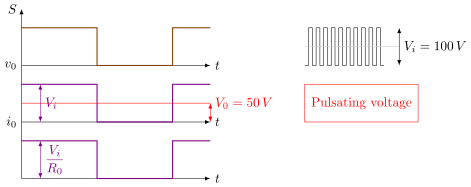
- Add an inductor \(L\) in series.
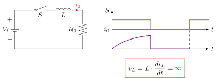
- Add a diode for freewheeling path.
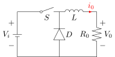
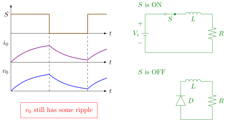
- Add a capacitor \(C\) with \(R_0\).
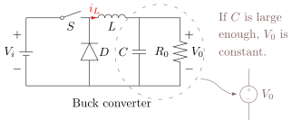
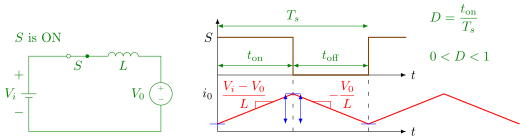
\(\displaystyle L \cdot \frac{di_L}{dt} = V_i-V_0 \implies \frac{di_L}{dt} = \frac{V_i-V_0}{L}\)
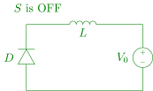
\[\begin{align*} \quad \frac{V_i-V_0}{\color{blue}\cancel{\color{red} L}} \color{red} \cdot t_{\mathrm{on}} &= \frac{V_0}{\color{blue}\cancel{\color{red} L}} \cdot t_{\mathrm{off}} \\ \quad (V_i-V_0) D \cdot \color{blue}\cancel{\color{red} T_s} &= V_0 \cdot (1-D) \color{blue}\cancel{\color{red} T_s}\\ D \cdot V_i &= V_0 \end{align*}\]
\(\displaystyle L \cdot \frac{di_L}{dt} = 0-V_0 \implies \frac{di_L}{dt} = -\frac{V_0}{L}\)